Ага, давайте парни, приятно было пообщаться!!!
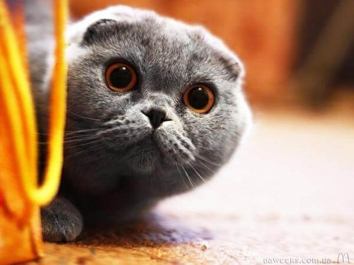О, котаны, здаров! Тут больше никого нет? Со мной такая история приключилась, только никому…
Всю ночь бухал с медведями. Нет ни то что я там свой, секу их тему…
Тут какая история, перед обедом я для аппетита валерьяночки выпил, я не злоупотребляю, выходной был все-таки, и тут мне внезапно стало скучно.
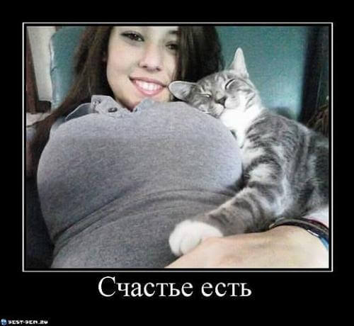Дай думаю прошвырнусь по улице, в кафешку какую-нить зайду, может знакомых встречу.
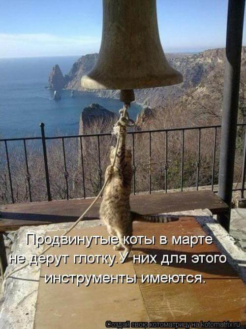Ну захожу я в бар, прохожу к стойке, а на меня хорьки какие-то смотрят.
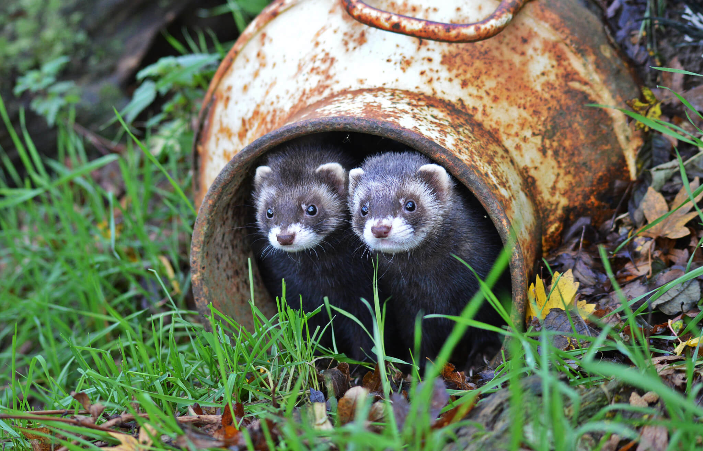Я Кот толерантный подходить побазарить не стал, им и так не повезло – хорьки все-таки.
Заказал валерианки, выпил. Смотрю вокруг может где знакомые есть, а эти хорьки на меня хитро смотрят и что-то говорят.
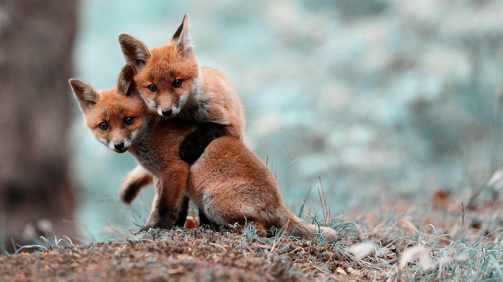«Неприятные они какие-то» - подумал я и выпил еще валерианы. Смотрю на этих упырей и не пойму че они тут трутся!?
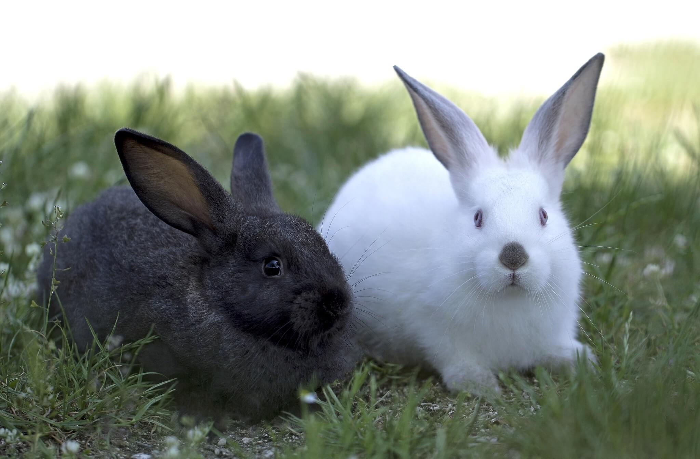А они еще что-то обсуждают и смеются. Эти наглые рожи, думаю, заказывают леща.
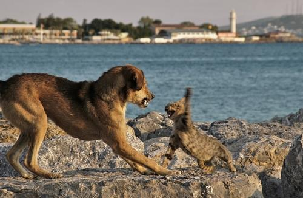Вспоминаю, что все это на голодный желудок, заказал вискас и пока его несли накатил еще.
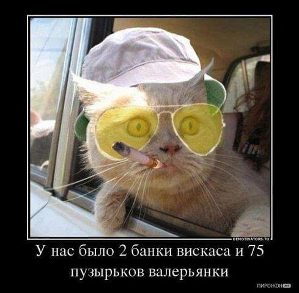Не помню, как, но я подошел к хорькам то ли взять прикурить то ли дать прикурить.
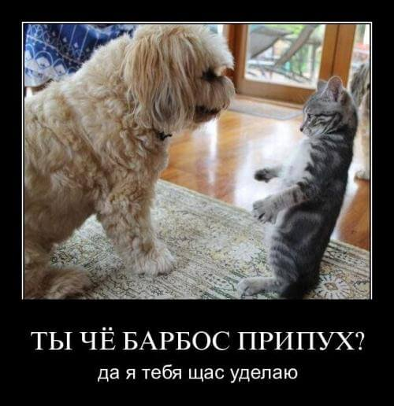Ну и пока мы там слово за слово кто-то кричит: «да я щас охрану вызову». Я – да я тут всю охрану знаю, кого ты там вызовешь?
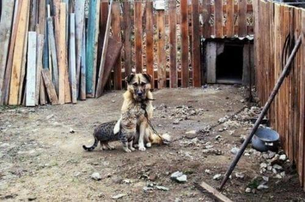Подхожу беру этого умника за шкирняк и чую что-то не то, ну не бывают хорьки такими большими, даже если кастрировать.
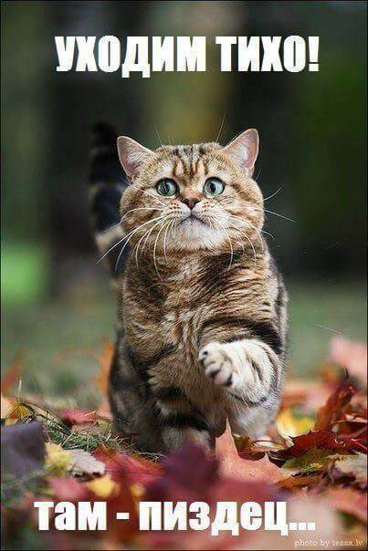Тут толпа собралась стала нас разнимать я ,мол, «отпустите меня я его щас порву, смотри мне в глаза животное».
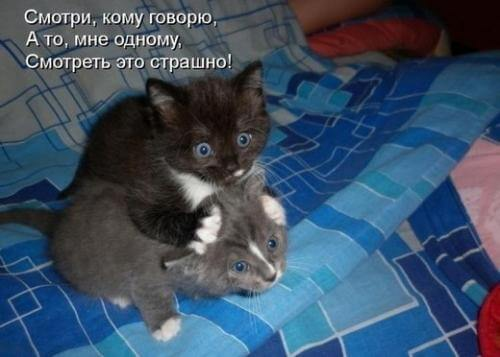Оказалось и не хорьки это вовсе, а медведи. Выпил я с ними медовухи, потом настойки медовой с перцем, потом пошли в зоопарк со слонами рамсить.
Я им рассказал что блогер, они обещали поставить лайки, сказали что поражаются моей смелости и что когда я зашел один из медведей чуть случайно на меня не наступил и не раздавил, а я даже не заметил.
Это они активно обсуждали, а потом еще и подошел за извинениями. Они попытались извиниться, а я даже слушать не стал.
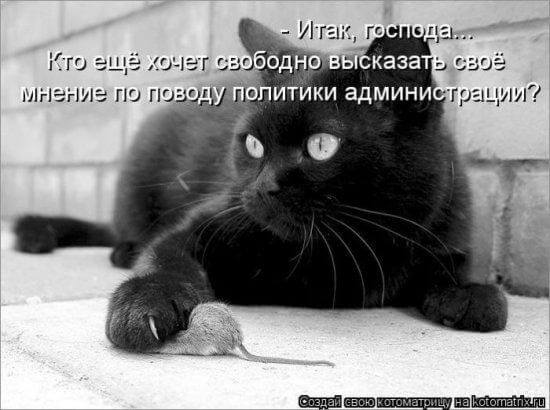Так, что все, никакой валерианы на голодный желудок!